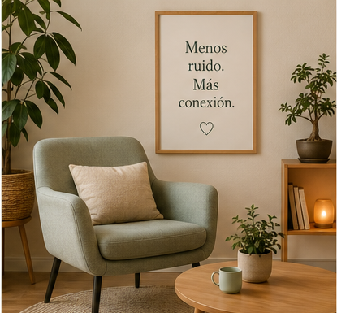
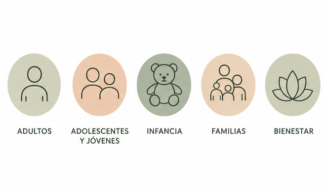
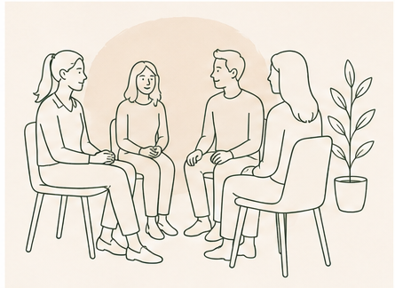
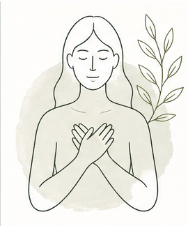
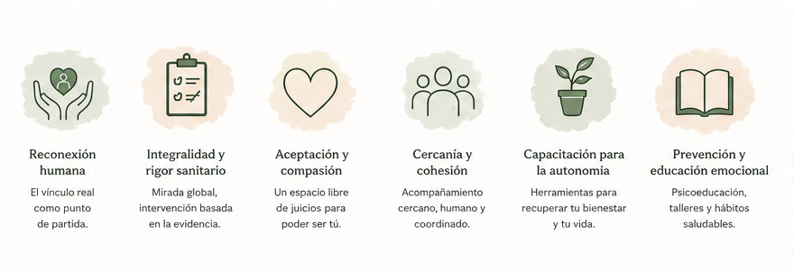
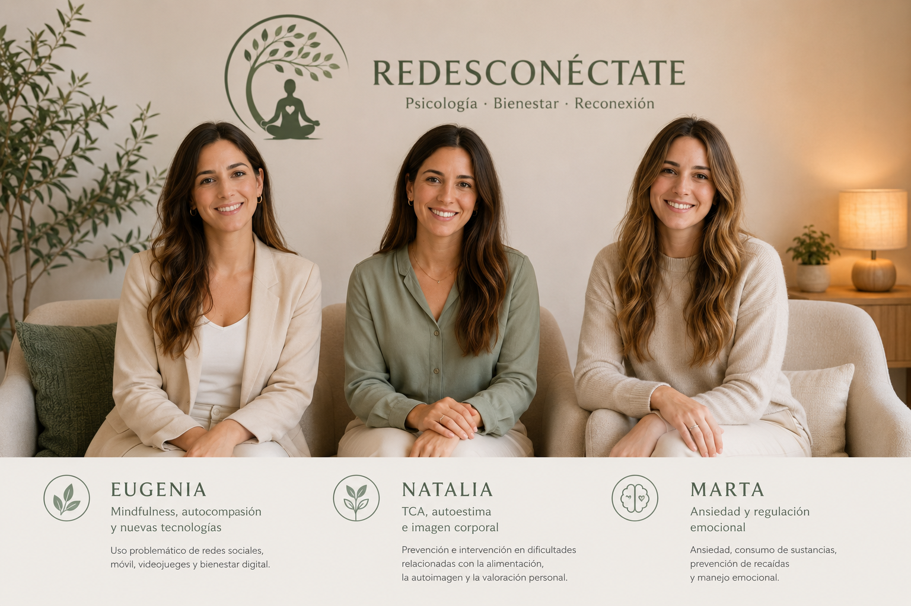

Ansiedad y regulación emocional
Evaluación, estrategias de afrontamiento, manejo de síntomas, consumo de sustancias y prevención de recaídas.
Psicología sanitaria en Málaga
Un espacio para bajar el ruido, comprender lo que te ocurre y recuperar una relación más amable contigo, con los demás y con la tecnología.
Desconectar para volver
En Redesconéctate acompañamos a adultos, jóvenes, infancia y familias en procesos de ansiedad, autoestima, regulación emocional, bienestar digital, adicciones, TCA e imagen corporal.
Trabajamos desde una mirada integral, cercana y basada en la evidencia: primero entendemos la historia y el contexto de cada persona; después construimos herramientas prácticas para recuperar autonomía y bienestar de forma duradera.

El malestar no siempre aparece de la misma forma. Por eso combinamos terapia individual, intervención familiar, trabajo grupal, psicoeducación, mindfulness y prevención.

Evaluación, estrategias de afrontamiento, manejo de síntomas, consumo de sustancias y prevención de recaídas.
Intervención en dificultades alimentarias, comparación corporal, autoexigencia y valoración personal.
Uso problemático de móvil, redes sociales, videojuegos, apuestas online e impacto de la hiperconexión.
Orientación para límites, comunicación, presión académica y social, aislamiento y uso saludable de pantallas.


Cómo trabajamos
Conocemos tu demanda, tu contexto y tus objetivos para proponer una intervención ajustada a tu momento vital.
Comprender el malestar ayuda a dejar de vivirlo como una amenaza y empezar a responder con recursos propios.
Entrenamos formas de parar, escucharte y construir una relación más consciente contigo y tu entorno.
El equipo revisa los casos de forma periódica y facilita derivación especializada cuando es necesario.
Reconexión humana, aceptación, cercanía, autonomía, educación emocional y una práctica sanitaria responsable.

Somos un equipo de psicólogas sanitarias con áreas complementarias para ofrecer una atención global y cercana.

Mindfulness, autocompasión y nuevas tecnologías
Uso problemático de redes sociales, móvil, videojuegos y bienestar digital.
TCA, autoestima e imagen corporal
Prevención e intervención en dificultades relacionadas con alimentación, autoimagen y valoración personal.
Ansiedad y regulación emocional
Ansiedad, consumo de sustancias, prevención de recaídas y manejo emocional.
El centro funciona con cita previa, en horario de mañana y tarde, con sesiones individuales, grupales y familiares según cada caso.
Recogemos tu demanda y valoramos qué tipo de acompañamiento puede ayudarte.
Exploramos información relevante para comprender qué ocurre y qué función tiene el malestar.
Definimos objetivos realistas y una intervención adaptada a tus necesidades.
Revisamos avances, ajustamos recursos y cuidamos la confidencialidad durante todo el proceso.
Cita previa
Si buscas un espacio seguro para ordenar lo que te pasa, recuperar calma y crear hábitos emocionales más sanos, podemos acompañarte paso a paso.